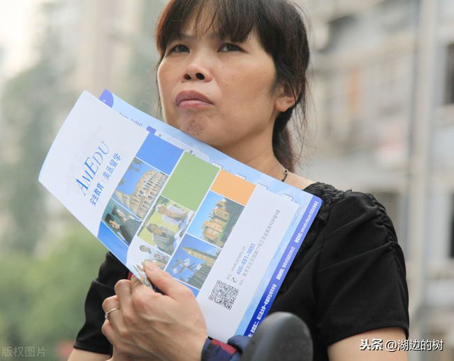
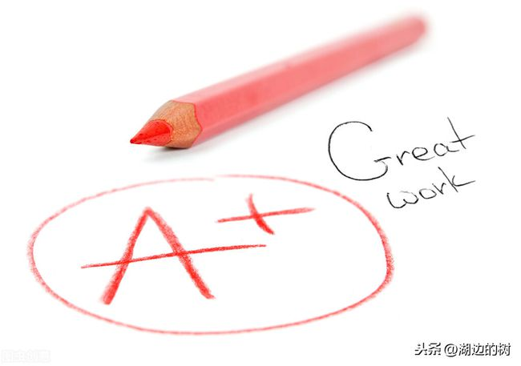
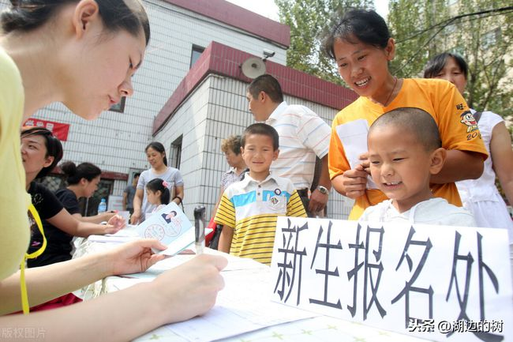
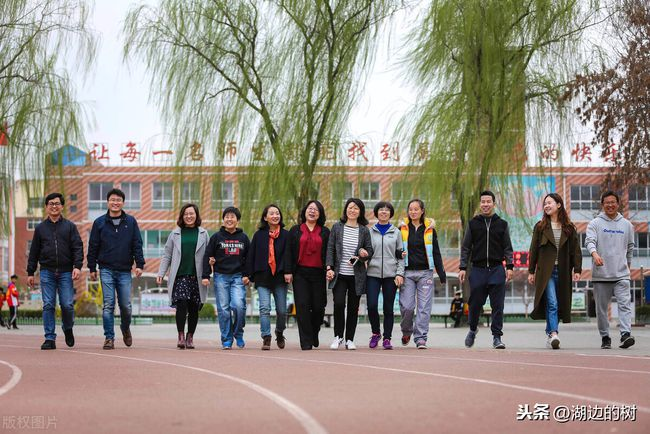
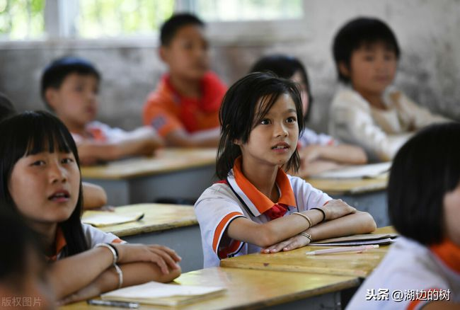
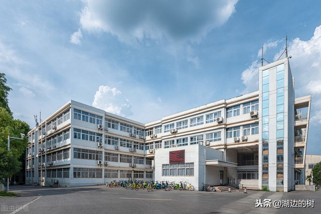

来源：搜狐新闻 编辑：xuwenwei
2021-01-14 10:16:59
这段时间，但凡和六年级的家长沟通，一定会讨论到“小升初”的问题，在谈话中，明显也能感到家长的焦虑。
稍微在班上打听了一下情况，参加校外机构组织的“小升初“考的学生还真不少，在”公民同招，民办摇号“政策的影响下，”小升初”的热度并没有减多少，家长也知道就算是考试，最终还是要参与摇号。
就拿我所在的市来讲，一类民办初中严格控制，就算是考，也只是选拔考，后面还是要摇号筛选。二类民办的口子显然要大很多，家长冲着重点班去考。
六年级的家长的焦虑可以理解，毕竟初中真的很重要。但是最焦虑的还是以下几类家长：

摇号后到底是好还是坏，这届六年级的家长不得而知，对不确定的事情焦虑实属正常。这种焦虑主要是来自于这样几个人群。
第一 成绩在小学很拔尖的家长最焦虑
相对于成绩一般或者是成绩较差的家长来说，成绩在小学拔尖的家长最焦虑。
因为今年7月的摇号，确实出现了成绩很好的孩子摇号到升学率很一般的学校。这就让成绩好的家长很担心，不想因为学校而影响孩子以后的成绩。
事实上也是这样，在外面参加“小升初”考试大多都是成绩比较好的学生。

第二 受政策影响较大的家
受到政策影响比较大的家长，也很焦虑。
比如民办名校的直升比例下调，有一部分家长当初读民办小学就是冲着初中的学位来的。摇号后，直升名额变少，孩子上哪个学校变得不再确定。这一类家长相对于其他家长来说，貌似更焦虑。毕竟前面已经为孩子付出了这么多，在快毕业的时候，新政实施，确实对孩子的升学造成了一定的影响。

第三 所在片区的初中学校的资源不够好
各个片区的教学资源并没有做到完全平衡，有的片区几乎无优质的教学资源，在这种情况下，家长自然会焦虑。
尤其是一些新建的小区，教学资源不够成熟。虽然学校对学生的影响不是万能的，但是家长肯定是想把最好的给孩子。

摇号后，家长没有了选择的权利，这几类家长的焦虑完全可以理解。但是政策就是政策，家长再怎么抱怨，再怎么焦虑，有些东西也无法改变。
学校无法选择的时候，与其焦虑，不如静下来，做好以下几件事。
第一 打铁还需自身硬，培养好孩子的学习习惯最重要
把希望寄托在学校的时候，家长还不如把希望寄托在孩子身上，趁着六年级最后半年多的时间，把孩子习惯培养好，养成独立学习和思考的能力更重要。
相信打铁还需自身硬。从小学的督促学到初中的自主学，这个衔接要做好，需要家长付出极大的耐心。

第二 对每个阶段的学习做好规划
抛开学校不讲，家长和孩子要对学习有个规划，六年级这段时间可以进行基础知识的积累，为初中打下好的基础。
尤其是文学常识和文言文以及英语单词的积累，这种积累可以为初中紧张的学习节约很多的时间。
第三 不必过分纠结学校的好坏
新政下，各地区的生源是趋于平衡的，不必去过分神话一些学校。名校也有考试只有几分的孩子。
家长过于执着某一所学校，会把这种焦虑的情绪传给孩子，让孩子觉得学校才是决定成绩好坏的因素。

任何一个政策肯定有既得的受益者，当然也会有受影响者。
在面对小升初的摇号时，家长要结合孩子自身的情况来给孩子定位
超想知道！海淀小升初100余所小学登记入学所在区域及对应中学
2020-11-24 10:31:59精品学习网(5iedu.com.cn)在建设过程中引用了互联网上的一些信息资源并对有明确来源的信息注明了出处，版权归原作者及原网站所有，如果您对本站信息资源版权的归属问题存有异议，请您致信qinquan#5iedu.com.cn(将#换成@)，我们会立即做出答复并及时解决。如果您认为本站有侵犯您权益的行为，请通知我们，我们一定根据实际情况及时处理。